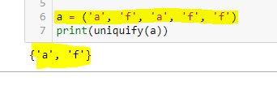

הי
אני בטוחה שהכוונה שלך טובה ובטח יש כאן משהו שאני מפספסת אבל התשובה שלך מתסכלת… עדיין אני לא מבינה מה לא בסדר…

האם רשימה וסט הן אותו דבר? איך נראה ההבדל ביניהם ?
אם זה גם לא עוזר תריצי את הפקודה
type()
על מה שהפונקציה שלך מחזירה, על התוצאות מהבודק האוטומטי ותסתכלי טוב בהגדרת התרגיל (מה שאורפז שלחה)
2 לייקים
הבעיה היא לא שחוזר NoneType, מה שנאמר שם זה שמנסים לקרוא ל-NoneType, כלומר שאיפשהו בקוד יש a() כלשהו שמתורגם כ-None() מכיוון ש-a==None. נסה לחשוב באיזה מקרים זה יכול לקרות (מדברים על זה איפשהו במחברת)
לייק 1
שורות 6-8 בלינק ששלחת
אה… רשימה ולא סט… עכשיו הבנתי
תודה רבה!!!
אני כל כך מיואש שאני שוקל להתייאש…
אחרי קריאה חוזרת ונשנית בשרשור פה ובערך מלאנתלפים תיקונים, אני מקבל את זה
AssertionError: פלט לא תקין כאשר מעבירים את None כפונקציה assert [1, 0, True, …, , '', …] == [1, True, 'test'] At index 1 diff: 0 != True Left contains 4 more items, first extra item: False Use -v to get the full diff
אבל בקוד התייחסתי למקרה של פונקציה מועברת כ NONE
ובכל המקומות במחברת החלפתי את הפונקציה המובנית בגרסה שלי וקיבלתי את אותה תוצאה
אשמח לאיזה טיפ או למכה הגונה על הראש, כל מה שיעזור לי להגיש את התרגיל תקין
יש מצב שתעלה את הצילום מסך של ההערה זה לא הכי קריא ככה 
{kind=link}
{kind=link}
{kind=link}
נראה שהפונקציה שלך לא פועלת כמו שהיא אמורה, ולמשל “מעבירה” את 0 כנכון על-אף שזה לא מה ש-filter עושה. בדוק מה filter עושה ומה הפונקציה שלך עושה על הרשימה [1, 0, True, ] למשל
לייק 1
מה שאורפז.
וגם באופן כללי, הבודק מנסה להריץ על הפונקציה שלך מקרים מסויימים כדי לראות איפה זה נופל, לרוב זה מקרי קצה למיניהם.
והוא מציג לך אותם 1, 0, וכו … שאתה רואה את זה ישר תבדוק את הדברים שהוא ניסה להריץ ותראה שלרוב לא חוזר מה שמתבקש
לייק 1
הכוונה היא להעביר לפונקציה שלי NONE כפונקציה ואת האיטרבל הזה?
כן. יש דוגמא במחברת על הטריק הזה של פילטר
לייק 1
טוב מסתבר שיש לי בעיות בהבנת הנקרא…תודה רבה על העזרה!
עברתי על ההתכבות פה ועדיין מפספס משהו.
התייחסתי לאפשרות שmyfilter יקבל NONE. פונקציונאלית זה גם עובד ומקבל את אותה תוצאה שפילטר מחזיר, אבל הבודק האוטומטי עדיין כועס. מישהו יכול לכוון אותי?
צירפתי במוסתר את ההתייחסות שלי לNONE.
תקציר
for item in iterable:
if ourfunc is None:
if item:
קראתי את התיעוד, ועדיין לא מבין איפה הבעיה.
הפונקציה שלי מחזירה ערך מסוג generator לא מבין איפה יש לי ערך שהוא None.
יש במחברת מספר דוגמאות על הפונקציה פילטר, בערך שליש מחברת מעל התרגיל הזה. ממליצה לרוץ על כולן ולבדוק שכולן עובדות, זה כנראה יעזור לך לאתר את מקור הבעיה
2 לייקים
הרצתי את כל הדוגמאות עם המימוש שלי, הכל עובר. עדיין מקבל שגיאה מהבודק 
לייק 1
מה השגיאה שאתה מקבל?
{kind=link}